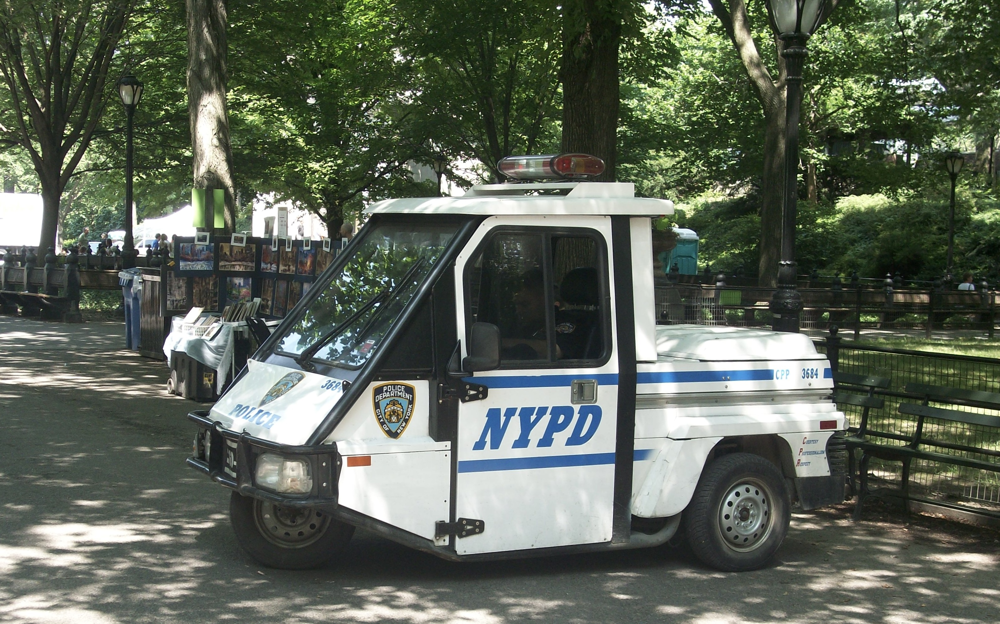

Crime in NYC Parks
 Image source: NYPD in Central Park
{kind=link}
Motivation
Exploring park crimes in NYC is essential for several reasons:
Improving Public Safety: Identifying high-risk areas allows for targeted interventions, ensuring the protection of parkgoers.
Raising Community Awareness: Understanding crime patterns guides public education and prevention efforts to reduce risks in parks.
Addressing Social and Economic Impact: Crime in parks can deter park usage, affecting local businesses and community engagement, which crime analysis can help mitigate.
Targeting Specific Times or Groups: Seasonal and demographic crime patterns allow for targeted safety measures tailored to specific risks.
Dataset
For this part, we chose NYC Park Crime Statistics provided by NYPD. This dataset contains detailed records of reported crimes in New York City’s parks. It includes data on various crime types, such as robbery, assault, and larceny, categorized by park, borough, and time period. This dataset is updated quarterly and aims to enhance public safety by offering transparency on crime trends in recreational areas. It serves as a valuable resource for researchers, policymakers, and residents interested in understanding and addressing crime in NYC parks.
The data processing process involves several steps to import, clean, and filter crime data from various park crime files spanning from 2015 to 2024. Since crime data is stored quarterly, we wrote a function to traverse all data file paths and special files were handled individually. The final dataset includes variables:
-park: park names;
-borough: parks’ boroughs;
-size_acres: size in acres;
-category: categories of parks;
-Crime types: murder, rape,
robbery, felony_assault,
burglary, grand_larceny,
grand_larceny_of_motor_vehicles;
-total: total crimes happened in that park;
-year: statistical year;
-season: statistical season.
Each row is a crime record for a park in specific year and season.
Crime Counts by Year in NYC Parks
## Warning: Using `size` aesthetic for lines was deprecated in ggplot2 3.4.0.
## ℹ Please use `linewidth` instead.
## This warning is displayed once every 8 hours.
## Call `lifecycle::last_lifecycle_warnings()` to see where this warning was
## generated.
It can be judged from the plot that serious crimes like grand larceny of motor vehicle, murder, rape and robbery, have a relative stable account and trend. However, crimes like burglary, felony assault and grand larceny (not motor vehicle but maybe jewelry or other valuables), have some fluctuations. Burglary and robbery has some decrease in 2020, largely because COVID-19 exploded and travel restriction was conducted. However, felony assault may show a potential increase due to factors such as sparse crowds or a limited number of offenders, which create an environment conducive to the crime. Psychologically, the perpetrators may feel emboldened, believing that the lack of witnesses reduces the likelihood of being arrested.
Crime Proportion
## Warning: There was 1 warning in `summarize()`.
## ℹ In argument: `across(everything(), sum, na.rm = TRUE)`.
## Caused by warning:
## ! The `...` argument of `across()` is deprecated as of dplyr 1.1.0.
## Supply arguments directly to `.fns` through an anonymous function instead.
##
## # Previously
## across(a:b, mean, na.rm = TRUE)
##
## # Now
## across(a:b, \(x) mean(x, na.rm = TRUE))From the pie chart, we can figure out that grand larceny (41.1%), robbery (31%) and felony assault (22%) were main crime types during last ten years.
Heatmap of Crime Counts

This is a heatmap of total crimes happened in different boroughs by year. In this heatmap, the higher the number of crimes, the darker the red color. It’s pretty obvious that Manhattan has a high crime rate. However, analyzing by years, there is no obvious changing trend.
Crime Statistics by Borough
This plot compares crime counts by type and borough in New York City, with each panel representing a specific crime type,. Manhattan stands out with the highest crime counts for grand larceny and felony assault, while Brooklyn leads in grand larceny of motor vehicle. The Bronx shows notably high counts for robbery and murder, often surpassing other boroughs for these crimes. In contrast, Staten Island and the Brooklyn/Queens area consistently report the lowest crime counts across all categories. Property crimes like grand larceny and felony assault have significantly higher totals compared to violent crimes such as murder and rape, which show smaller totals.
The differences in crime counts across boroughs and crime types may stem from several factors. Manhattan, with its dense population and economic activity, shows higher grand larceny and felony assault rates due to more opportunities for theft and interpersonal conflicts. The Bronx, often associated with economic challenges, exhibits higher rates of violent crimes like murder and robbery. Brooklyn’s urban sprawl and higher car ownership contribute to more grand larceny of motor vehicles. Staten Island’s low crime counts may reflect its smaller population or underreporting. Variations in tourism, socioeconomic conditions, policing, and community infrastructure further influence the distribution of crimes.
Distribution of Crime Counts by Type in Top 3 Parks
| park | total_crimes |
|---|---|
| flushing_meadows_corona_park | 775 |
| washington_square_park | 511 |
| coney_island_beach_&_boardwalk | 418 |
| randall’s_island_park | 369 |
| prospect_park | 307 |
| bryant_park | 252 |
Above is the top six parks where most crimes occurred. We want to have a look at these parks’ crime distribution by type for assisting you to determine whether this is truly a dangerous park or if it simply has incidents of relatively minor crimes. Thus, we selected the three parks with the highest total number of crimes, and then divided them into statistics and visualizations according to the types of crimes. The following is the statistical table and the chart.
| Park Name | Burglary | Felony Assault | Grand Larceny | Motor Vehicle Theft | Murder | Rape | Robbery |
|---|---|---|---|---|---|---|---|
| coney_island_beach_&_boardwalk | 4 | 78 | 245 | 1 | 0 | 6 | 81 |
| flushing_meadows_corona_park | 42 | 124 | 436 | 48 | 0 | 9 | 116 |
| washington_square_park | 1 | 118 | 325 | 0 | 0 | 2 | 64 |
From both the table and the plot, there were no murders in any of the three parks, and felonies were relatively rare. It is reasonable to assume that the high number of crimes in these parks is due to the high number of less serious crimes.
Discussion
- Data Quality and Completeness.
The dataset relies on reported crimes, which may underrepresent actual crime occurrences due to underreporting, especially in parks located in boroughs with lower socioeconomic conditions.
- Lack of Predictive Analysis.
Insights into causation or actionable triggers for crime remain limited, restricting the utility of findings for proactive measures.
- Visualization Limitations.
Although the visualizations are informative, some charts, such as the heatmap, might oversimplify trends by aggregating data at the borough level. This approach could mask intra-borough variations or park-specific patterns.